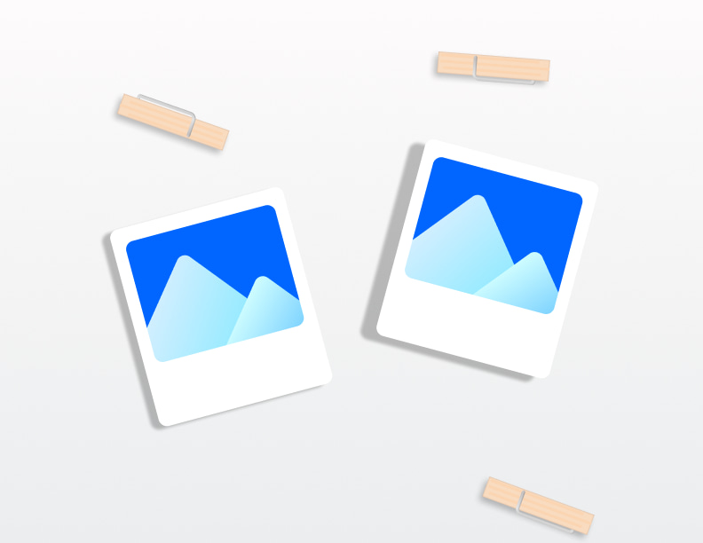

Captured moments: A story in photos
Photos are a powerful way to tell stories. In our world of shrinking attention spans and fragmented memories, photos play an even more important role. They help us share our experiences and connect with people around the globe.
For my project, I'm excited to create a website about my chickens at home. They’re more than just egg layers; they’re beloved pets that I think about every day. Seeing their pictures reminds me of my hometown in Moorpark, where I would hang out with them while reading.
One photo I'm especially excited to use is a picture of my chicks when they were still babies. It’s amazing how quickly they grow! I was sad to miss seeing them grow up while I was away at college, but my family has been sharing plenty of pictures and videos. These photos tell a story about me, since I’ve grown up with birds and poultry. They have a special place in my heart.
Inspired by this discussion of memories, I talked to my classmate Beverley Fan about her collection of photos. She shared her stamp collection, which she amassed during a cross-country hiking trip with her family. I was impressed by the sheer number of stamps she had collected, and I found it fascinating how each stamp represented a significant milestone on her journey. One stamp that Beverley is particularly proud of is her recent Yellowstone stamp. It’s a cherished memory for her, as she loved the scenery and the experience.